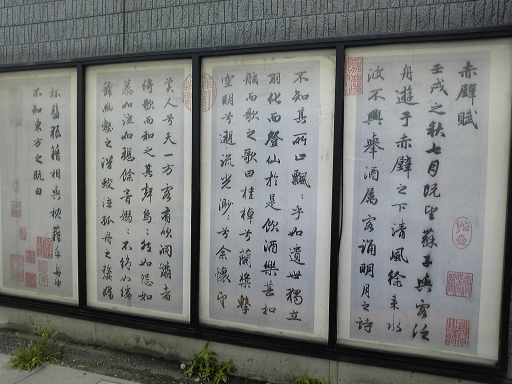

NGUYÊN VĂN
前赤壁賦
壬戌之秋，七月既望，蘇子與客泛舟遊於赤壁之下。
清風徐來，水波不興。舉酒屬客，誦明月之詩，歌窈窕之章。少焉，月出於東山之上，徘徊於斗牛之間，白露橫江，水光接天。縱一葦之所如，凌萬頃之茫然。浩浩乎如馮虛御風，而不知其所止；飄飄乎如遺世獨立，羽化而登仙。於是飲酒樂甚，扣舷而歌之。歌曰︰
桂棹兮蘭槳，
擊空明兮，泝流光。
渺渺兮予懷，
望美人兮天一方。
客有吹洞蕭者，倚歌而和之；其聲嗚嗚然，如怨如慕，如泣如訴；餘音裊裊，不絕如縷。舞幽壑之潛蛟，泣孤舟之嫠婦。
蘇子愀然，正襟危坐，而問客曰︰
- 何為其然也？
客曰︰“月明星稀，烏鵲南飛，”此非曹孟德之詩乎？西望夏口，東望武昌，山川相繆，鬱乎蒼蒼；此非孟德之困於周郎者乎？方其破荊州，下江陵，順流而東也，舳艫千里，旌旗蔽空，釃酒臨江，橫槊賦詩；固一世之雄也，而今安在哉？況吾與子，漁樵於江渚之上，侶魚蝦而友糜鹿，駕一葉之扁舟，舉匏樽以相屬；寄蜉蝣與天地，渺滄海之一粟。哀吾生之須臾，羨長江之無窮；挾飛仙以遨遊，抱明月而長終；知不可乎驟得，托遺響於悲風！
蘇子曰︰客亦知夫水與月乎？逝者如斯，而未嘗往也；盈虛者如彼，而卒莫消長也。蓋將自其變者而觀之，而天地曾不能一瞬；自其不變者而觀之，則物與我皆無盡也，而又何羨乎？且夫天地之間，物各有主，苟非吾之所有，雖一毫而莫取。惟江上之清風，與山間之明月，耳得之而為聲，目遇之而成色，取之無盡，用之不竭，是造物者之無盡藏也，而吾與子之所共適。
客喜而笑，洗盞更酌，肴核既盡，杯盤狼藉，相與枕藉乎舟中，不知東方之既白。

.Tiền Xích Bích Phú
PHIÊN ÂM
TIỀN XÍCH BÍCH PHÚ
Nhâm Tuất chi thu, thất nguyệt kí vọng, Tô Tử dữ khách phiếm chu du ư Xích Bích chi hạ.
Thanh phong từ lai, thuỷ ba bất hứng, cử tửu chúc khách, tụng Minh Nguyệt chi thi, ca Yểu Điệu chi chương. Thiểu yên, nguyệt xuất ư đông sơn chi thượng, bồi hồi ư Đẩu Ngưu chi gian, bạch lộ hoành giang, thuỷ quang tiếp thiên. Túng nhất vi chi sở như, lăng vạn khoảnh chi mang nhiên. Hạo hạo hồ như bằng hư ngự phong, nhi bất tri kì sở chỉ; phiêu phiêu hồ như di thế độc lập, vũ hoá nhi đăng tiên. Ư thị ẩm tửu lạc thậm, khấu huyền nhi ca chi. Ca viết:
Quế trạo hề lan tương[1],
Kích không minh hề, tố lưu quang,
Diểu diểu hề dư[2] hoài,
Vọng mĩ nhân hề thiên nhất phương.
Khách hữu xuý đỗng tiêu[3] giả, ỷ ca nhi hoạ chi; kì thanh ô ô nhiên, như oán như mộ, như khấp như tố, dư âm niểu niểu, bất tuyệt như lũ. Vũ u hác chi tiềm giao, khấp cô chu chi li phụ.
Tô tử sậu nhiên, chính khâm nguy toạ, nhi vấn khách viết:
- Hà vi kì nhiên dã?
Khách viết:
- “Nguyệt minh tinh hi, ô thước nam phi”, thử phi Tào Mạnh Đức chi thi hồ? Tây vọng Hạ Khẩu, đông vọng Vũ Xương, sơn xuyên tương liễu[4], uất hồ thương thương, thử phi Mạnh Đức chi khốn ư Chu Lang giả hồ? Phương kì phá Kinh Châu, hạ Giang Lăng, thuận lưu nhi đông dã, trục lô thiên lí, tinh kì tế không, sỉ tửu Lâm Giang, hoành sáo phú thi, cố nhất thế chi hùng dã, nhi kim an tại tai? Huống ngô dữ tử, ngư tiều ư giang chử chi thượng, lữ ngư hà nhi hữu mi lộc, giá nhất diệp chi thiên chu, cử bào tôn dĩ tương chúc; kí phù du ư thiên địa, diểu thương[5] hải chi nhất túc, ai ngô sinh chi tu du, tiện trường giang chi vô cùng; hiệp phi tiên dĩ ngao du, bão minh nguyệt nhi trường chung. Tri bất khả hồ sậu đắc, thác di hưởng ư bi phong!
Tô tử viết:
- Khách diệc tri phù thuỷ dữ nguyệt hồ? Thệ giả như tư, nhi vị thường vãng dã; doanh hư giả như bỉ, nhi tốt mạc tiêu trưởng dã. Cái tương tự kì biến giả nhi quan chi, nhi thiên địa tằng bất năng dĩ nhất thuấn; tự kì bất biến giả nhi quan chi, tắc vật dữ ngã giai vô tận dã, nhi hựu hà tiện hồ? Thả phù thiên địa chi gian, vật các hữu chủ, cẩu phi ngô[6] chi sở hữu, tuy nhất hào nhi mạc thủ. Duy giang thượng chi thanh phong, dữ sơn gian chi minh nguyệt, nhĩ đắc chi nhi vi thanh, mục ngộ[7] chi nhi thành sắc, thủ chi vô cấm, dụng chi bất kiệt, thị tạo vật giả chi vô tận tạng dã, nhi ngô dữ tử chi sở cộng thích.
Khách hỉ nhi tiếu, tẩy trản cánh chước. Hào hạch kí tận, bôi bàn lang tạ, tương dữ chẩm tạ hồ chu trung, bất tri đông phương chi kí bạch.
DỊCH NGHĨA
BÀI PHÚ TIỀN XÍCH BÍCH
Ngoài rằm tháng bảy mùa thu năm Nhâm Tuất[8], Tô tử cùng với khách bơi thuyền chơi ở dưới núi Xích Bích[9].
Hây hây gió mát, sóng lặng như tờ, cầm chén rượu lên mời khách, đọc bài thơ Minh Nguyệt và hát một chương Yểu Điệu[10]. Một lát, trăng mọc lên trên núi Đông Sơn[11], đi lững thững trong khoảng hai sao Ngưu, Đẩu[12]. Khi đó sương toả trên mặt sông, nước trong tiếp đến chân trời. Tha hồ cho một chiếc thuyền nhỏ đi đâu thì đi, vượt trên mặt nước mênh mông muôn khoảnh. Nhẹ nhàng như cưỡi gió đi trên không, mà không biết là đi đến đâu; hớn hở sung sướng như người quên đời đứng một mình, mọc cánh mà bay lên tiên. Vì thế uống rượu vui lắm, rồi gõ vào mạn thuyền mà hát. Hát rằng:
Thung thăng thuyền quế chèo lan,
Theo vừng trăng tỏ vượt làn nước trong[13].
Nhớ ai cánh cánh bên lòng,
Nhớ người quân tử[14] ngóng trông bên trời.
Trong bọn khách có một người thổi ống sáo, bèn theo bài ca của ta mà hoạ lại. Tiếng sáo não nùng rên rỉ như sầu như thảm như khóc như than. Tiếng dư âm vẫn còn lanh lảnh, nhỏ tít như sợi tơ chưa dứt. Làm cho con giao long ở dưới hang tối cũng phải múa mênh, người đàn bà thủ tiết ở một chiếc thuyền khác[15] cũng phải sụt sùi.
Tô Tử buồn rầu sắc mặt, thu vạt áo, ngồi ngay ngắn mà hỏi khách rằng:
- Làm sao lại có tiếng não nùng làm vậy?
Khách đáp rằng:
- Câu “Minh nguyệt tinh hi, ô thước nam phi” chẳng phải là câu thơ của Tào Mạnh Đức đó ru?[16] Đương khi Tào Mạnh Đức phá đất Kinh Châu[17], xuống thành Giang Lăng[18], thuận dòng mà sang mặt đông, tàu bè muôn dặm, cờ tán rợp trời, rót chén rượu đứng trên mặt sông, cầm ngang ngọn giáo ngâm câu thơ, đó thực là anh hùng một đời mà nay thì ở đâu? Huống chi tôi với bác đánh cá, kiếm củi ở bến sông này, kết bạn cùng tôm cá, chơi bời với hươu nai, bơi một chiếc thuyền nho nhỏ, nhắc chén rượu để mời nhau, gởi thân phù du ở trong[19], trời đất xem ta nhỏ nhặt như hạt thóc ở trong bể xanh, thương cho sự sống của ta không bao lâu mà khen cho con sông này dài vô cùng[20]. Vậy mà muốn được dắt tiên bay để vui chơi cho sung sướng, ôm lấy vừng trăng tỏ mà sống mãi ở đời. Tôi không làm sao được như vậy cho nên nảy ra tiếng rầu rĩ ở trong cơn gió thoảng!
Tô tử nói:
- Vậy thế thì bác có biết nước và mặt trăng không? Nước chảy thế kia mà chưa từng đi bao giờ; mặt trăng khi tròn khi khuyết như vậy mà chưa từng thêm bớt bao giờ. Bởi vì ta tự ở nơi biến đổi mà xem ra thì cuộc trời đất cũng chỉ ở trong một cái chớp mắt; mà nếu tự ở nơi không biến đổi mà xem ra thì muôn vật cùng với ta đều không bao giờ hết cả; cần gì phải khen đâu! Vả lại ở trong trời đất nào có chủ ấy, nếu không phải là của ta thì dẫu một li ta cũng không lấy. Chỉ có ngọn gió mát ở trên sông cùng vừng trăng sáng ở trong núi, tai ta nghe nên tiếng, mắt ta trông nên vẻ, lấy không ai cấm, dùng không bao giờ hết, đó là kho vô tận của Tạo hoá mà là cái vui chung của bác với tôi.
Khách nghe vậy, mừng và cười, rửa chén lại, rót rượu uống một lần nữa. Khi đồ nhắm, hoa quả đã khan, mâm bát bỏ ngổn ngang, cùng nhau gối đầu ngủ[21] ở trong khoang thuyền, không biết rằng vừng đông đã sáng bạch từ lúc nào.
PHAN KẾ BÍNH dịch
NHẬN ĐỊNH
Phú xuất hiện từ thời Chiến Quốc ở nước Sở; người mở đường cho nó là Tống Ngọc, rồi tới đời Hán thì cực thịnh, văn nhân nào cũng luyện nó. Nó có vần, có điệu, là một loại giữa thơ và tản văn; nhưng đời Hán các văn nhân thường chỉ dùng nó để ca tụng tài đức của thiên tử cùng cảnh bình trị đương thời, làm vui tai đẹp mắt bề trên, thiếu hẳn giá trị về nội dung.
Qua đời Đường nó có những qui tắc rất nghiêm khắc và những qui tắc này được giữ cho tới đời Thanh. Coi những bài phú Nôm của ta thời Lê, Nguyễn thì thấy những qui tắc đó bó buộc văn nhân ra sao.
Đời Tống, Âu Dương Tu và Tô Thức là những người đầu tiên có sáng kiến gạt bỏ những qui tắc đó, dùng thể văn xuôi để phá phú, nhờ vậy dễ diễn được tình, ý hơn và tạo được những bài bất hủ như bài này, bài Hậu Xích Bích phú (coi ở sau) và bài Thu thanh phú (ở trên)[22]. Trong ba bài đó, chúng ta nhận thấy tác giả dung hoà hai thể biền và tản: cũng có những về đối nhau, cũng giữ vần, nhưng lúc nào đối không được tự nhiên thì bỏ, số chữ không nhất thiết phải cân xứng; bằng trắc không nhất thiết phải theo luật.
Bài Tiền Xích Bích phú này nổi danh vào bậc nhất trong cổ văn Trung Hoa; lời đẹp mà hùng (như câu: Kích không minh hề, tố lưu quang; - bạch lộ hoành giang, thuỷ quang tiếp thiên; túng nhất vi chi sở như, lăng vạn khoảnh chi mang nhiên; - hạo hạo hồ như bằng hư ngự phong, nhi bất tri kì sở chỉ; phiêu phiêu hồ như di thế độc lập, vũ hoá nhi đăng tiên…), cảm xúc lại dạt dào hoài cổ mà ý tưởng lại thâm trầm khoáng đạt. Ngâm cả đoạn cuối, từ “Khách diệc tri phù thuỷ dữ nguyệt hồ…” ta thấy lâng lâng như muốn “vũ hoá” thật.
Tô Thức là một nhà Nho mà chịu ảnh hưởng nhiều của Lão, Trang; ông dung hoà được Nho và Lão, vì vậy mà ai cũng thích văn của ông. Đọc câu: “tự kì bất biến giả nhi quan chi, tắc vật dữ ngã giai vô tận dã”, chúng ta nhớ đến câu của Trang Tử trong thiên Đức sung phù: “Tự kì dị giả thị chi, can đảm Sở Việt dã; tự kì thử đồng giả thị chi, vạn vật giai nhất dã”[23]. Ý tuy khác mà giọng thì như một.
Bản dịch của Phan Kế Bính đã khá sát, nên chúng tôi không dịch nghĩa lại nữa; nhưng xin chép thêm bản dịch ra thơ Song thất lục bát của Đào Nguyên Phổ, một bản dịch rất hay mà hai ông Đỗ Bằng Đoàn và Đỗ Trọng Huề đã có công sưu tầm và cho in trong bộ Việt Nam ca trù biên khảo:
Năm Nhâm Tuất qua rằm tháng bảy,
Ông Tô công cùng mấy người quen,
Trên sông Xích Bích con thuyền,
Gió hiu hiu thổi, sóng êm êm dừng.
Cuộc mời khách tay nâng chén rượu,
Thơ Nguyệt minh Yểu điệu ngâm rền,
Non đông chợt thấy sáng lên,
Vầng trăng lơ lửng giữa chiền Đẩu, Ngưu.
Móc ngang sông phau phau làn trắng,
Nước in trời loang loáng vẻ xanh,
Buông theo chiếc lá lênh đênh,
Ðè muôn đợt sóng mông mênh cõi ngoài.
Lồng lộng tựa lưng trời cỡi gió,
Mà biết rằng dừng đỗ nơi nao,
Nhởn nhơ thoát tục lên cao,
Hóa ra lông cánh bay vào cõi tiên.
Vui vẻ rượu nhắp liền mấy chén,
Gõ nhịp thuyền cất tiếng hát ran,
Hát rằng: “Chèo quế buồm lan,
Ðập tung ánh sáng, miết lên ngược dòng.
Xa thăm thẳm chạnh lòng tưởng nhớ,
Trông mỹ nhân cách trở phương trời.”
Khách liền thổi sáo họa bài,
Vo vo tiếng sáo như người khóc than.
Như mến tiếc căm hờn mọi nỗi,
Giọng ngân dài tựa mối tơ vương.
Hang sâu quằn quại thuồng luồng,
Thảm tình gái góa thuyền suông sụt sùi.
Ông Tô xốc áo ngồi chỉnh chệ,
Hỏi khách sao buồn thế này ư?
Khách rằng: “Trăng sáng sao thưa,
Ðàn chim ô thước lững lờ về nam”.
Câu thơ ấy ai làm thủa trước,
Chẳng phải Tào Mạnh Ðức đó không?
Vũ Xương, Hạ Khẩu tây đông,
Nước non quanh quất mấy trùng xanh xanh.
Ấy chẳng phải Tào binh thuở nọ,
Bị Chu Lang đánh đổ đấy không?
Kinh Châu vừa mới phá xong,
Giang Lăng đạp đổ thuận sông xuôi thuyền.
Sông nghìn dặm chật liền tàu chiến,
Trời bốn phương che kín bóng cờ.
Giữa vời lọc rượu nhởn nhơ,
Quay ngang ngọn giáo ngâm thơ một bài.
Anh hùng nhất trên đời lừng lẫy,
Mà bây giờ nào thấy ở đâu,
Huống ta vớt củi buông câu,
Lứa đôi tôm cá, bạn bầu hươu nai.
Thuyền một lá vui chơi chèo chống,
Rượu lưng bầu êm giọng chuốc luôn.
Xác vờ gởi mặc kiền khôn,
Tẻo teo hạt thóc trong cồn bể xanh.
Thoáng một chốc kiếp sinh là mấy,
Khen con sông nước chảy khôn cùng.
Cắp tiên chơi chốn non Bồng,
Tay ôm chị nguyệt những mong trọn đời.
Biết không thể vật nài thế được,
Giọng buồn ngâm gởi trước gió bay”.
Ông Tô rằng: “Khách có hay,
Kìa kìa nước ấy trăng này đó không?
Nước kia vẫn xuôi dòng chảy xiết,
Mà chưa từng đi hết chút nao.
Trăng kia có lúc đầy hao,
Mà ta chưa thấy khi nào bớt thêm.
Cứ lúc biến mà xem trời đất,
Thì chẳng qua chớp mắt mà thôi.
Cứ khi không biến mà coi,
Thì ai ai cũng lâu dài như nhau.
Vả thử ngẫm trong bầu vũ trụ,
Có vật gì không chủ đâu mà.
Vật gì chẳng phải của ta,
Dẫu từ một mảy, chớ hòa nhúng tay.
Chỉ trên nước hây hây gió thổi,
Với sườn non vòi vọi trăng treo,
Tai nghe văng vẳng tiếng reo,
Mắt trông thấp thoáng có nhiều vẻ tươi.
Mặc sức lấy nào ai dám giữ,
Tha hồ tiêu vẫn cứ chứa chan,
Của Trời kho đụn vô vàn,
Mà đôi ta hãy chơi tràn là vui”.
Khách mừng rỡ miệng cười tay rót,
Nhắm cạn rồi mâm bát ngổn ngang,
Kề lưng dựa gối trong khoang,
Quá say nào biết đã tang tảng ngày.
ĐÀO NGUYÊN PHỔ dịch[24]
Sau khi viết bài phú đó, Tô Đông Pha lại có dịp đi chơi ở Xích Bích nữa, lại làm một bài phú nữa, nhan đề là Hậu Xích Bích phú. Bài này về phần tư tưởng không có gì, nhưng cũng nổi danh, miêu tả rất khéo, và cũng cho ta thấy cái tâm trạng khoáng đạt, phiêu diêu của tác giả, nên chúng tôi cũng trích dịch ra dưới đây. Cả hai bài thường dùng làm đầu đề thi họa cho các nghệ sĩ Trung Hoa thời sau. Ta thường thấy những bức tranh vẽ một người bơi thuyền giữa trời có trăng và một con chim đen bay ngang; cảnh đó chính là cảnh Tô Đông Pha chơi Xích Bích.